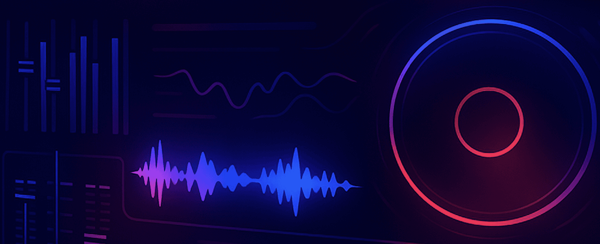
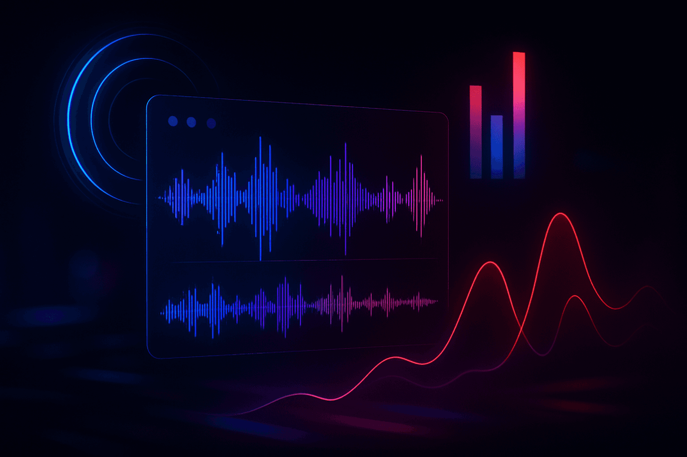
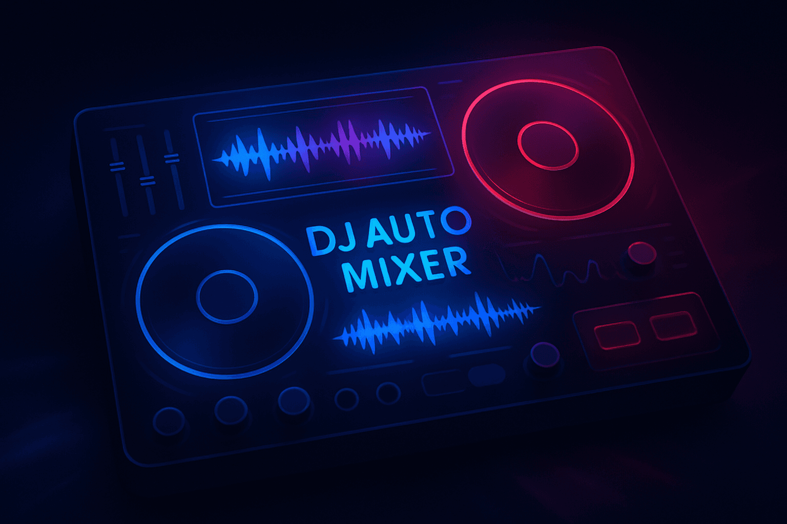

As a DJ, my life revolves around finding the perfect next track to keep the energy flowing, but what if software could handle the transitions for you?
Interested in DJ software? Check out my other blog posts:
- The Best AI DJ Software
- DJ Music Libraries Explained
- The Best Beginner DJ Software
What You’ll Learn About DJ Auto Mixer Software
- The real difference between a basic dj auto mixer and an intelligent AI co-pilot.
- The essential features to look for in modern DJ software.
- How platforms like Serato, Rekordbox, and djay Pro handle automated mixing.
- How PulseDJ acts as your creative partner, improving your sets without taking away your control.
What is DJ Auto Mixer Software?

At its core, DJ auto mixer software is designed to automatically mix music by creating transitions between songs without manual intervention. Think of it as an advanced version of a playlist crossfader. You line up your tracks, hit play, and the app handles the rest, fading one song out while the next one fades in.
For a long time, I saw this as something for beginners or for setting up background music at low-key parties with family. It’s convenient, for sure. You can load a playlist and walk away. But the problem I always had was the lack of creativity. The transitions are often basic, ignoring the musical key, song structure, and the overall energy of the room. A simple fade at the wrong time can completely kill the vibe an audience is feeling. A professional dj needs more control.
Meet Your AI Co-Pilot: PulseDJ
This is where PulseDJ changes the game. I don't think of it as an automixer; I think of it as my AI co-pilot. It’s a completely separate app that runs alongside my main DJ software and is designed to be a stable companion that won't interfere with your performance.
Here’s how it works:
- Runs Alongside Your Gear : PulseDJ offers official, seamless integration with the top DJ platforms, including Rekordbox, Serato DJ Pro, Virtual DJ, Traktor, and djay PRO.
- Analyzes in Real-Time : As you play music, PulseDJ analyzes the active track and instantly provides suggestions for what to play next, pulling directly from your own music library.
- Provides Intelligent Suggestions : These aren't random recommendations. They are based on an analysis of millions of DJ sets from around the world, combined with crucial data like BPM and musical key.
- Simplifies Harmonic Mixing : It instantly highlights tracks that are in a harmonically compatible key, taking the guesswork out of creating a musically perfect mix.
- Keeps You in Control : PulseDJ doesn't take over. It gives you the information and confidence to make better creative choices, allowing you to focus on the art of the mix while it handles the data.
I use PulseDJ to free up my brain when DJing. Instead of needing to constantly search for the next song, PulseDJ does the crunching for me. This means I can put more energy and thought into my transitions and performance, and have more fun when DJing instead of thinking about the logistics.

The Rise of Intelligent and Automatic DJ Mixing

Thankfully, technology has evolved. The conversation has shifted from just automating a crossfade to providing intelligent assistance that helps a dj achieve a better mix. This is where the magic really happens.
Modern DJ software, and especially companion tools, now focus on analyzing your music on a much deeper level. They offer features like:
- BPM & Beat Matching: The software automatically detects the tempo (bpm) of your tracks and can sync the beats for you. This is the foundation of a smooth mix, ensuring the drums and rhythms line up perfectly.
- Key Detection: This is a game-changer. The dj app analyzes the musical key of each track. By mixing songs that are in the same or a compatible key (known as harmonic mixing), you can create incredibly smooth transitions that are musically pleasing.
- Waveform Analysis: Visualizing the structure of a song - seeing where the vocals, instrumentals, and breakdowns are - allows for much smarter mixing phrases. You can see the drop coming and perfectly time your transition.
A great example of a modern DJ app that has pushed these boundaries is djay Pro. It’s famous for seamlessly integrating with your existing music library and has even won an Apple Design Award for its user experience on Mac and iOS devices like the iPhone and iPad. It offers powerful tools that elevate it beyond a simple automixer.
Key Features to Look For in DJ Auto Mix Software

When you're evaluating software to help you play music, whether you're a new dj or a seasoned pro, here are the things I always look for.
When I evaluate any piece of DJ software or a companion app, I look at it as a complete system. It's not just about one feature; it's about how they all work together to support my creativity. Here is the single list of must-haves I recommend to any dj, from beginner to pro.
- Intelligent, Data-Driven Track Analysis: This is non-negotiable. Your primary software must provide rock-solid BPM and beatgrid detection, as well as accurate harmonic key detection. This is the foundational data for every mix. A tool like PulseDJ takes this a step further. It acts as an AI co-pilot, analyzing the track you're currently playing and using its own powerful algorithm - based on key, tempo, and data from millions of real-world DJ sets - to recommend what to play next. It turns basic track data into actionable, creative insight.
- Seamless Integration and Stability: Your gear should work in harmony. Your main dj app must be stable on your chosen platform (macOS, Windows, iOS, etc.) and connect flawlessly with your hardware. This is also where a companion app proves its worth. PulseDJ, for instance, is designed specifically to run alongside all the major players - Serato , Rekordbox , Virtual DJ , Traktor , and Algoriddim djay Pro . It doesn't interfere with your performance; it simply acts as a stable, reliable source of inspiration that's always on when you need it.
- Deep Music Library Connection: A dj app must give you effortless access to your personal library. But beyond that, the right tools help you rediscover the music you already own. Instead of just relying on streaming platforms like Beatport or SoundCloud for new ideas, PulseDJ dives deep into your existing library. It surfaces those forgotten gems that are the perfect harmonic match or energy boost for the track you have played, ensuring your unique sound and collection are always at the forefront.
- Full Creative Control and Workflow Enhancement: Automation should never replace artistry. While a basic dj auto mixer might handle transitions, a professional setup must keep you in the driver's seat. You need precise EQs to isolate vocals or drums, high-quality effects to build tension, and customizable crossfader controls. This is the core philosophy of PulseDJ. It never takes control. It doesn't mix for you or fix your mistakes. It provides intelligent suggestions, empowering you to make a better-informed creative decision while leaving the final choice, the timing, and the execution entirely in your hands. It enhances your flow without ever getting in the way of your unique DJ style
- Platform Compatibility (Mac, Windows, iOS, Android): Your dj setup is personal. You need an app that works where you work. The best developers offer support across multiple platforms. Whether you’re on macOS in your studio or using a mobile setup on an iPad, compatibility is crucial. While many great apps started on Mac, the demand for Windows and even Android versions has grown.
- DJ App Music Library Integration: A dj app is useless without your music. It must be able to connect with and access your personal library easily. This also extends to streaming services. Integrations with SoundCloud, Beatport, and other platforms give you access to millions of tracks. The holy grail for many has been Apple Music integration, and while DRM restrictions make this difficult for performing DJs, some apps like djay have found innovative ways to work with your Apple Music account. Sometimes these features require cloud subscriptions with extra pricing - but you don't always need to subscribe.
- Transition Control and Effects: Even if you want help with mixing, you should never give up full control. The software should allow you to manually override any automation. You need to be able to adjust EQs, apply effects, and manipulate the sound to fit the moment. The ability to create your own unique style is what separates a DJ from a playlist.
Comparison of DJ Auto Mixer Software Styles
To get a clearer picture, this table outlines the different approaches to DJ auto mixing technology.
Feature
Traditional Manual DJing
Basic Auto-Mix
AI Co-Pilot (PulseDJ)
Control
Full creative control
Limited to none
Full creative control
Track Selection
100% DJ's choice
Playlist-based, sequential
DJ's choice, enhanced by AI suggestions
Transitions
Manual beatmatching, EQing
Automated crossfade
Manual, guided by harmonic/BPM data
Learning Curve
Low, enhances existing skills
Best For
Professional performing DJ, studio work
Background music, house parties
Any DJ, from new dj to pro
Is There a "Perfect" DJ Auto Mixer?
After years behind the decks, I can tell you that a "perfect" dj auto mixer doesn't exist, because DJing is an art form. It's about reading the room, telling a story with your songs, and creating a unique flow. A fully automated system can't replicate that human connection.
The real goal isn't to have a robot mix for you. It's to use technology that helps you make better decisions, faster. Instead of replacing your skills, the right tool should enhance them, giving you the data and insight to elevate your set and blow your audience away. You don't need a tool to fix your mixing; you need one to inspire it.
That's why I love PulseDJ. Because it takes away the logistical work, and frees up your creative brain to get more expressive with your mixing.
Start Mixing with an AI Co-Pilot Instead

While the idea of a fully automated dj auto mixer is tempting, the true path to becoming a better dj lies in mastering your craft with tools that support you, not replace you. Software should enhance your creative flow, not dictate it.
PulseDJ gives you the intelligence you're looking for without stripping away the art of DJing. It helps you discover the hidden connections in your own music library and gives you the confidence to try new transitions you might have overlooked. If you’re ready to see what an AI co-pilot can do for your sets, join the community of artists who are already using it.
Download PulseDJ for free today, and unlock a super-powered auto mixing workflow!
‹ Good Free DJ Software: A DJ's Guide for 2025